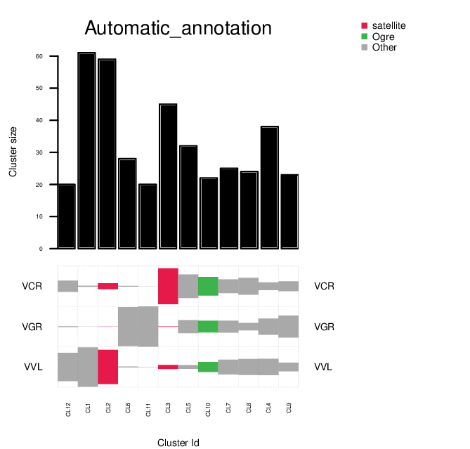
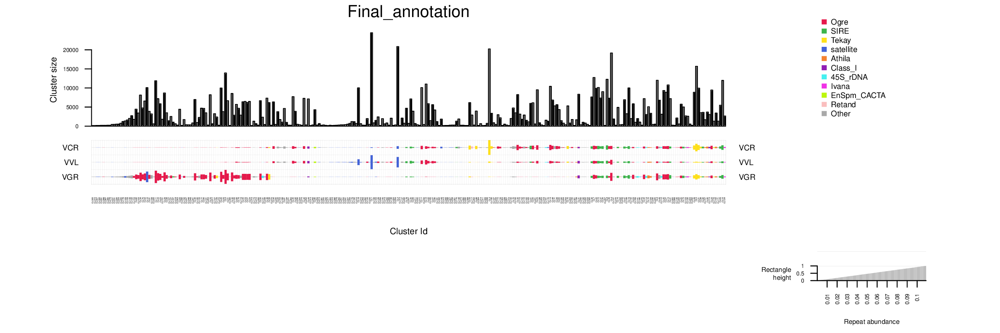

Some utilities for visualization of RepeatExplorer output
Table of Contents
Utilities for visualization of RepeatExplorer2 outputs
1 Requirements
- R programming environment with optparse package is required. In Ubuntu based distribution this can be installed using:
sudo apt-get install r-base-core r-cran-optparse
2 Visualization of comparative clustering
Visualization can be created with script plot_comparative_clustering_summary.R
using two output files from RepeatExplorer pipeline:
File CLUSTER_TABLE.csv contains automatic annotation, information about
cluster sizes and the total number of reads used for analysis:
Example of CLUSTER_TABLE.csv:
"Number_of_reads_in_clusters" 3002 "Number_of_clusters" 895 "Number_of_superclusters" 895 "Number_of_singlets" 6998 "Number_of_analyzed_reads" 10000 "Cluster" "Supercluster" "Size" "Size_adjusted" "Automatic_annotation" "TAREAN_classification" "Final_annotation" 1 1 61 61 "All" "Other" 2 2 59 59 "All/repeat/satellite" "Putative satellites (high confidence)" 3 3 45 45 "All/repeat/satellite" "Putative satellites (low confidence)" 4 4 38 38 "All" "Other" 5 5 32 32 "All" "Other" 6 6 28 28 "All" "Other" 7 7 25 25 "All" "Other" 8 8 24 24 "All" "Other" 9 9 23 23 "All" "Other" 10 10 22 22 "All/repeat/mobile_element/Class_I/LTR/Ty3_gypsy/non-chromovirus/OTA/Tat/Ogre" "Other" 11 11 20 20 "All" "Other" 12 12 20 20 "All" "Other"
In the output file from RepeatExplorer pipeline, the last column
Final_annotation is empty - this column is supposed to be completed manually! Visualization is created based on the Final_annotation column. If the
data in Final_annotation is missing Automatic_annotation column is used instead.
Species specific composition of clusters is provided in tab delimited file COMPARATIVE_ANALYSIS_COUNTS.csv file:
# Total counts: 2544 2522 2494 2440 # "cluster" "supercluster" "LAS" "PFL" "PST" "VML" 1 1 61 0 0 0 2 2 0 23 36 0 3 3 45 0 0 0 4 4 0 0 0 38 5 5 32 0 0 0 6 6 0 13 15 0 ...
2.1 Visualization examples:
2.1.1 Example 1
Simple visualization without genome size normalization:
./plot_comparative_clustering_summary.R \ --cluster_table=example_data/example_1_CLUSTER_TABLE.csv \ --comparative_counts=example_data/example_1_COMPARATIVE_ANALYSIS_COUNTS.csv \ --output=figs/example1.pdf

Blocks show the proportion of species within the clusters. Barplot shows the
total cluster sizes. By default, maximum 10 most abundant annotated categories are colored and
shown on legend. The number of colored categories can be specified by option
-N, maximum number of colors is 20.
2.1.2 Example 2
It is possible to create visualization based on the nuclear genomic sequences only.
Two images below show the visualization with and without organele and
contaminated clusters (using option -n).
# organel and contamination included ./plot_comparative_clustering_summary.R \ --cluster_table=example_data/example_2_CLUSTER_TABLE.csv \ --comparative_counts=example_data/example_2_COMPARATIVE_ANALYSIS_COUNTS.csv \ --number_of_colors 10 \ --output=figs/example_with_contamination.pdf # clusters containing organelle and contamination were removed (option -n) ./plot_comparative_clustering_summary.R \ --cluster_table=example_data/example_2_CLUSTER_TABLE.csv \ --comparative_counts=example_data/example_2_COMPARATIVE_ANALYSIS_COUNTS.csv \ --number_of_colors 10 -n \ --output=figs/example_nuclear_only.pdf
The clusters with plastid are included:
The clusters annotated as plastid are removed:

2.1.3 Example 3
If you want to visualize genomic abundances of repetitive sequences, you must provide also tab delimited file with genome sizes of analyzed species in the folowing format:
VCR 2.9 VVL 2.04 VGR 3.78
Example command to visualize genomic abundances, option -g is used to specify
file with genome sizes:
./plot_comparative_clustering_summary.R \ --cluster_table=example_data/example_2_CLUSTER_TABLE.csv \ --comparative_counts=example_data/example_2_COMPARATIVE_ANALYSIS_COUNTS.csv \ --number_of_colors 10 -g example_data/example_2_GS.csv \ --output=figs/example_genomic_abundances.pdf
Note that if option -g is used, non-nuclear sequences are always removed.
 Size of block is directly proportional to the amount of repeat in nuclear DNA.
2.2 complete command line options:
Usage: ./plot_comparative_clustering_summary.R [options] Options: -c CLUSTER_TABLE, --cluster_table=CLUSTER_TABLE file from RepeatExplorer2 clustering - CLUSTER_TABLE.csv -m COMPARATIVE_COUNTS, --comparative_counts=COMPARATIVE_COUNTS file from RepeatExplorer2 output - COMPARATIVE_ANALYSIS_COUNTS.csv -o OUTPUT, --output=OUTPUT File name for output figures (pdf document) -N NUMBER_OF_COLORS, --number_of_colors=NUMBER_OF_COLORS Number of unique colors used from plotting (2-20, default is 10) -g GENOME_SIZE, --genome_size=GENOME_SIZE file from genome sizes of species provided in tab delimited file in the format: species_code1 GenomeSize1 species_code2 GenomeSize2 species_code3 GenomeSize3 species_code4 GenomeSize4 provide the same codes for species as in file COMPARATIVE_ANALYSIS_COUNTS.csv. The use of genome sizes file imply the --nuclear_only option. -n, --nuclear_only remove all non-nuclear sequences (organelle and contamination). -h, --help Show this help message and exit